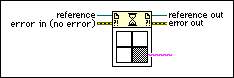

Wait On Asynchronous Call Node
Owning Palette: Application Control VIs and Functions
Requires: Base Development System
Waits for an asynchronous call to a target VI to finish executing and then returns the outputs of the target VI. To use the Wait On Asynchronous Call node on a reference, you must include the 0x100 option flag as part of the options input of the Open VI Reference function when you open the reference. You also must call the target VI with the Start Asynchronous Call node.

 Add to the block diagram Add to the block diagram |
 Find on the palette Find on the palette |